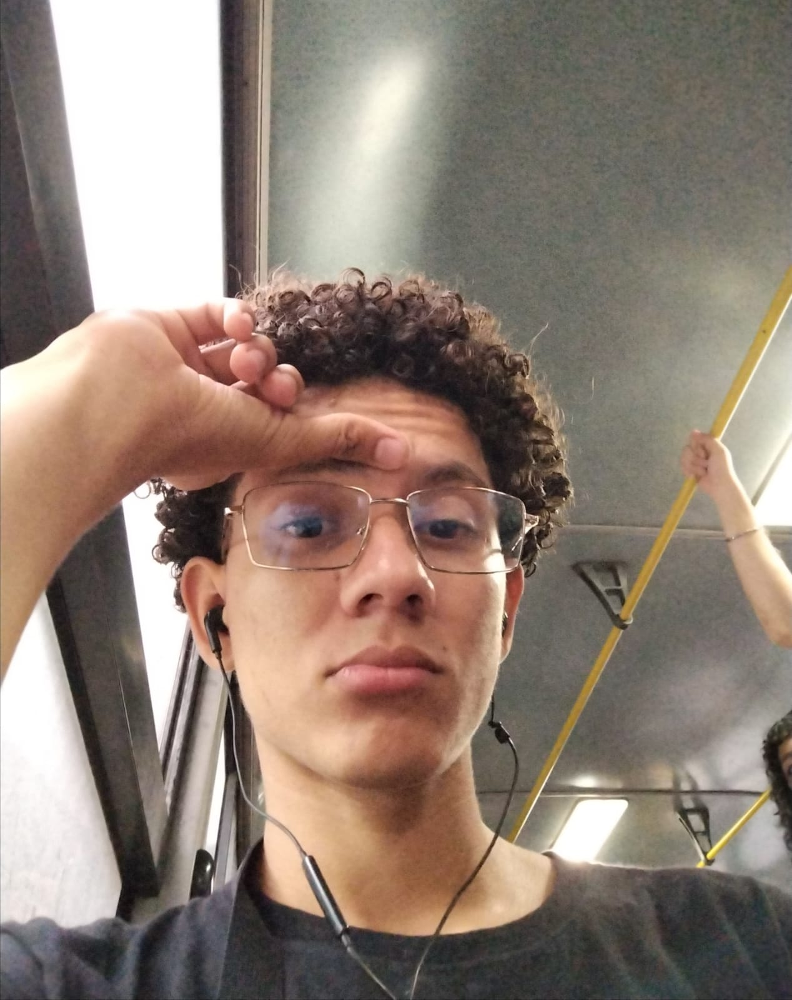

Cedula: 703210844
Telefono: 63440734
Correo Electronico: olivareselkin9@gmail.com
Soy una persona responsable, proactiva y con muchas ganas de aprender.
Me gusta trabajar en equipo y
compartir mis conocimientos con los demas.
Actualmente estoy estudiando la carrera de Informatica
empresarial
en la Universidad de Costa Rica
mientras llevo un curso de Desarrollo Web para mejorar mis habilidades en
el area de
tecnologia.